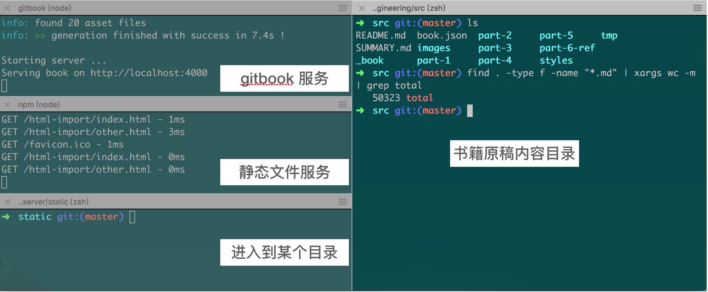
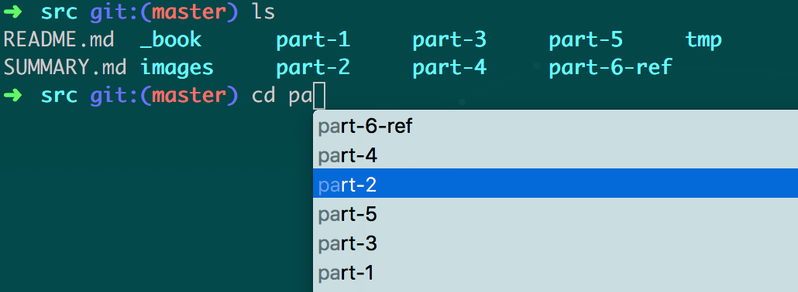
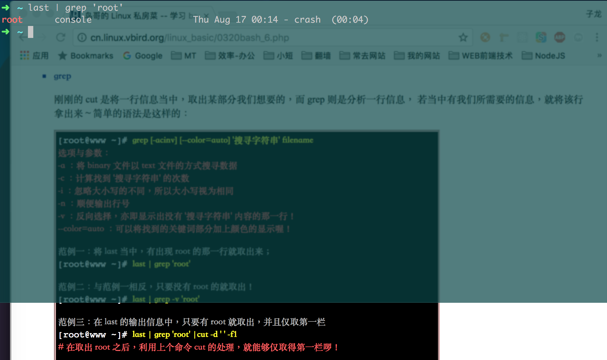
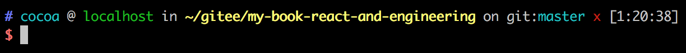

Mac 终端与常用命令行工具
下面介绍的工具适用于 Mac OS。
XCode
在 Mac OS 下进行开发，需要用到 XCode 里的一个子工具：Command Line Tools for Xcode。可以通过如下命令触发安装进程：
$ xcode-select --install
完整的 XCode 工具通常体积很大。不过其提供的模拟器（Simulator）在调试 iOS Safari 浏览器页面时是非常方便的，所以建议完整地安装 XCode。
Iterm2
无论开发或者运维，亦或平时进行一些简单的任务，使用终端（Terminal）都比 GUI 界面程序高效得多。MacOS 虽然自带了一个终端，却并不好用，如果不借助于 Oh-my-zsh 这样的工具，甚至都无法进行文件名称补全提示。此外，MacOS 的终端也不支持窗口分隔为多面板（Split Panes）。
怀着打造一个好用的 MacOS 终端的理念，Iterm2 诞生了，它是用 Objective-C 为主要编程语言开发的终端模拟程序（terminal emulator）。它有许多方便的功能：
多个窗口
Iterm2 最常用的功能，是将当前标签分割为多个面板。例如我在写这本书的时候，将标签分为四个面板：

自动补全（Autocomplete）
输入单词的开头部分，然后按 Cmd 和 ;，就可以出现自动补全提示选择框，此时通过上下箭头或者鼠标，可以直接选择自己想要输入的词语。如下图所示。

随时随地召唤 Iterm2（Hotkey Window）
在 Iterm2 的偏好设置里（Preferences -> Keys -> Create a Dedicated Hotkey Window），可以设置一个能够通过快捷键随时打开的悬浮半透明终端窗口。这个功能对于随时想敲上几句命令行的开发者来说很有帮助。好比我正在浏览鸟哥的Linux私房菜网站，看到有个命令很有意思，想尝试一下。就可以通过这种方式快速“召唤”出 Iterm2（如果希望在全屏模式下也可以悬浮显示 Iterm2，需要设置其打开的方式为 Floating Window）：

其他
此外，Iterm2 还有选择文本并复制的快捷方式，保留粘贴历史，强大的搜索，以及命令回溯功能。可以在其官网[1]获得更详细的使用说明。
Zsh 和 Oh-my-zsh
1990年，Paul Falstad 还在普林斯顿大学读书时，写出了 Zsh 的第一版。程序的名字“zsh”来源于当时的一位助理教授（如今已经是耶鲁大学的教授） Zhong Shao 的账号 ID，Paul Falstad 用 “zsh” 命名这个程序向他致敬[3]。如今也可以认为 zsh 是 “Z bash” 的缩写。Zsh 要比 Unix/Linux 自带的 bash 好用得多。
Zsh 有许多优秀的插件，可以提升工作效率。例如 git 插件，当你在使用了 git 的目录下工作时，Zsh 就总是可以显示当前所在的分支，以及是否有变动。
Oh-my-zsh 则是一个 Zsh 配置管理框架。安装 Oh-my-zsh 前要确保 Zsh 已经装好（Mac 预装了 Zsh，所以很方便）。运行下面的脚本可以安装 Oh-my-zsh：sh -c "$(curl -fsSL https://raw.github.com/robbyrussell/oh-my-zsh/master/tools/install.sh)"
Oh-my-zsh 还提供了多种主题包供选择，在 ~/.oh-my-zsh/themes/ 目录下列出了所有可用的主题。例如在 ~/.zshrc 里配置：
# 默认主题是 robbyrussell
# ZSH_THEME="robbyrussell"
ZSH_THEME="ys"
即可切换主题为 ys：

Homebrew
对 Mac 用户而言，虽然系统已经携带了应用商店（App Store），但里面的软件大都是面向非程序员用户。对开发者来说，需要有像 Ubuntu 下的 apt-get 程序那样的软件管理器。Homebrew [2]就承担了这样的角色，它也许是 MacOS 上最好的开源软件管理工具，最初由 Max Howell 在 2009 年用 Ruby 语言开发，现在则有十多个开发者一起维护其核心代码。用户不需要安装 Ruby，因为它早已在 MacOS 中预装好了。通过在终端运行下面的命令，可以安装 Homebrew：/usr/bin/ruby -e "$(curl -fsSL https://raw.githubusercontent.com/Homebrew/install/master/install)"
Homebrew 会将程序安装到其自己的目录下（在 Mac 中，通常位于 /usr/local/Cellar 目录下），然后将其可执行文件链接到 /usr/local 目录下。以 wget 程序为例，安装时执行：
$ brew install wget
wget 会被解压到 /usr/local/Cellar/wget 中：
Cellar
└── wget
└── 1.18
├── README
├── bin
│ └── wget
├── ...
而在 /usr/local/bin 目录中，会创建一个软链接 wget 指向 /usr/local/Cellar/wget/1.18/bin/wget，可以像下面那样来查看链接情况：
$ cd /usr/local
$ ls -l bin | grep wget
wget -> ../Cellar/wget/1.18/bin/wget
brew 可以安装一个软件的多个版本，然后用户可以使用 brew switch 来切换需要的版本。例如，不同的 yarn 版本可能有不同的包目录结构，如果希望切换到某个特定的 yarn 版本（例如 1.10.1），那么可以执行下面的命令：
$ brew switch yarn 1.10.1
Max Howell 在 2015 年曾经闹出过一段新闻，喜剧性地描述是这样：Max Howell 去谷歌面试，面试官让他对一个二叉树进行反转，然而 Howell 没有回答上来，结果就是没有被谷歌聘用。Howell 回家后在 Twitter 上表达了自己的怨念：
Google: 90% of our engineers use the software you wrote (Homebrew), but you can't invert a binary tree on a whiteboard so f* off.
知名在线编程网站 Leetcode 则趁机将这个问题添加到自己的题库里（226-Invert Binary Tree[4]），并且将难度标记为“Easy”。